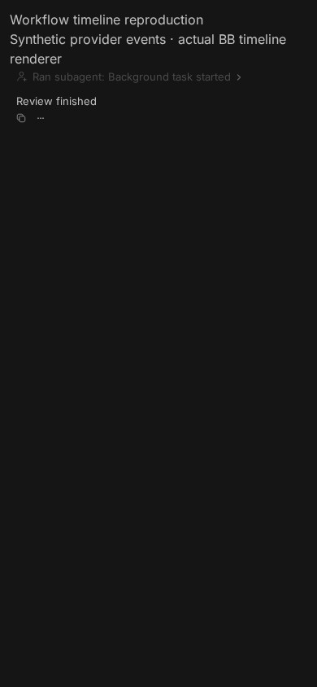
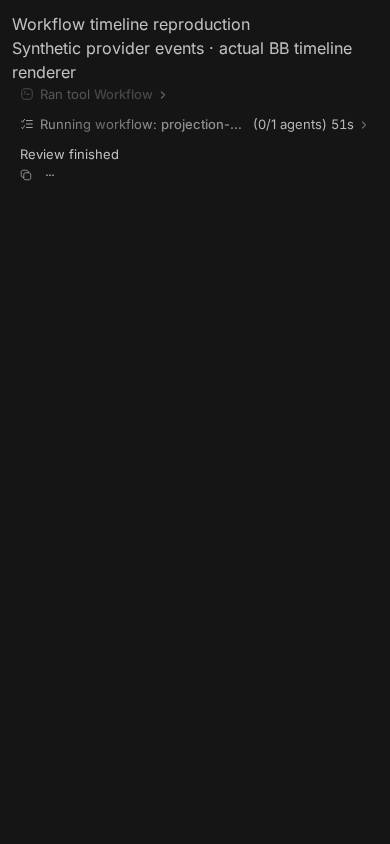
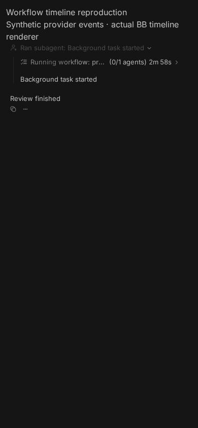
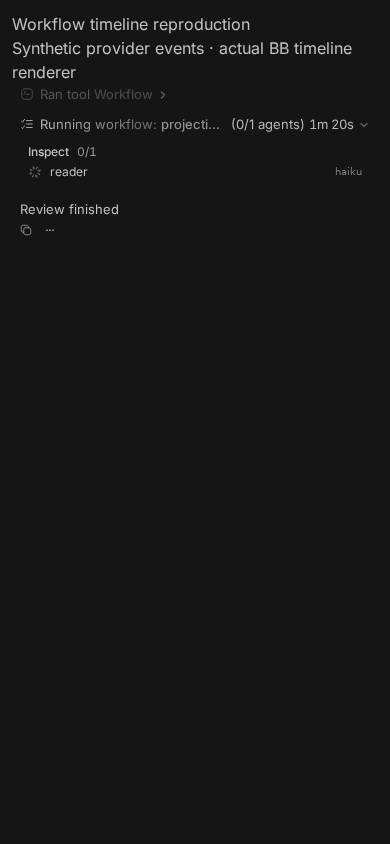
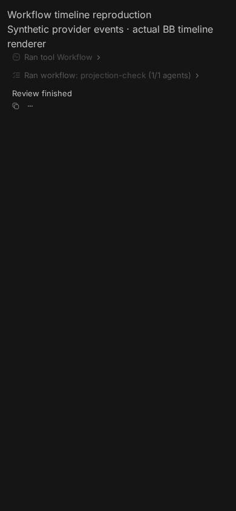

#6027 · Workflow task parentage misclassifies launcher rows
Trusted base: b143a22860944a96bf183605dfb0ffe58b1de283 · Verdict: REPRODUCED · Root-cause confidence: high.
1. TL;DR
A workflow background task retains a link to the tool that launched it. The shared timeline projection interprets that link as proof that the launcher is a subagent delegation, then puts the workflow underneath that delegation. The progress data is present, but there is no workflow row at the launcher's own level. A deterministic regression fails on trusted main in two separate clean worktrees, and the actual BB timeline renderer reproduces the misplaced row at a 390 × 844 viewport. A contained projection-only repair makes the launcher and workflow siblings while keeping stored events and provider parent links unchanged.
2. Claims vs findings
| Claim | Finding | Evidence |
|---|---|---|
| A workflow launcher becomes a delegation and hides the root progress row. | Verified | All 12 pre-fix regression cases fail. Actual BB renderer shows “Ran subagent” instead of a sibling workflow row. |
| Workflow progress data already exists. | Verified | The pre-fix assertion output contains the intact phase and agent snapshot inside delegation childRows. |
| Only raw output is available after expanding the launcher. | Qualified | In the minimal fixture, expanding the delegation reveals both a nested workflow row and the launch result text. The verified defect is the extra delegation layer, not missing workflow data. |
| Launchers can be folded into subagent summaries. | Verified code path | The view counts delegation rows as subagents; workflow rows are explicitly excluded from activity summarization. The minimal visual fixture shows the single-delegation case, not a multi-tool summary. |
| Changing stored parent links is unnecessary. | Verified | The local fix changes only transient projection contexts. Existing server pagination suites pass without any provider, event schema, or database changes. |
| Installed macOS/Claude behavior, a three-agent run, and phone-specific interaction details. | Not re-run | This investigation uses trusted source, synthetic provider events, and the real web renderer. No new Claude process, paid workflow, desktop build launch, or iOS Safari session is claimed. |
3. Environment
- Trusted public repository: get-bb/bb; fetched origin/main at the full commit above. Both checkouts begin at that commit.
- Linux 4.19.0-gvisor; Node 22.19.0; pnpm 9.15.0; Vitest 4.1.1; Chrome for Testing 156.0.8078.47.
- Frozen installs succeed in both worktrees. The full base build succeeds with
--concurrency=1(67 tasks); an initial parallel attempt hit an SDK build-order race and required no source changes. - Visual harness: isolated Ladle servers on 45428 (unchanged production code) and 45427 (local fix), viewport 390 × 844. No BB server, host daemon, user database, provider session, or imported store is started for the reproduction.
- Source and browser tooling run locally. Random work-directory, host, and session identifiers are intentionally omitted from this public report.
4. Minimal reproduction
- Create a trusted checkout, install, build, and save the regression test shown below.
git clone https://github.com/get-bb/bb.git bb-6027-base cd bb-6027-base git checkout b143a22860944a96bf183605dfb0ffe58b1de283 pnpm install --frozen-lockfile --prefer-offline pnpm exec turbo run build --concurrency=1 Save the test below as: packages/thread-view/test/workflow-launcher-timeline.test.ts pnpm exec turbo run typecheck --filter=@bb/thread-view pnpm exec turbo run test --filter=@bb/thread-view -- test/workflow-launcher-timeline.test.ts
- The fixture contains a completed launcher tool call and a
local_workflowbackground task whoseparentToolCallIdpoints to that launcher. It includes one phase and one agent, avoiding any external model calls. - Expected: the launcher remains a tool row; exactly one workflow row follows it in the same turn. If the launcher is inside a real delegation, both rows remain inside that delegation. A thread-scoped completion must return to the launch turn.
- Actual on trusted main: the launcher becomes a delegation; the expected sibling tool/workflow pair does not exist. Before-fix output from the first checkout:
@bb/thread-view:test: AssertionError: expected { …(19) } to be undefined @bb/thread-view:test: AssertionError: expected { …(19) } to be undefined @bb/thread-view:test: AssertionError: expected { …(19) } to be undefined @bb/thread-view:test: AssertionError: expected -1 to be greater than or equal to 0 @bb/thread-view:test: Test Files 1 failed (1) @bb/thread-view:test: Tests 12 failed (12) Tasks: 2 successful, 3 total
Actual renderer captures
These are real screenshots of the source BB timeline renderer, fed the same parent/task relation. The fixture deliberately omits provider presentation labels, so the launcher text is generic. No screenshot is a proposed mockup.





Regression test
Save this complete file at packages/thread-view/test/workflow-launcher-timeline.test.ts. It uses existing public timeline construction and has no test-only production seam.
Full copy-pasteable regression (12 cases)
import { threadScope, turnScope, type ThreadEvent } from "@bb/domain";
import type { TimelineRow } from "@bb/server-contract";
import { describe, expect, it } from "vitest";
import { EMPTY_ACCEPTED_CLIENT_REQUEST_CONTEXT } from "../src/accepted-client-request-context.js";
import {
buildThreadTimelineFromEvents,
type ThreadEventWithMeta,
} from "../src/index.js";
function launchEvents(options: {
nested: boolean;
completionOnly: boolean;
running: boolean;
}): ThreadEventWithMeta[] {
const scope = turnScope("turn-1");
const parent = options.nested ? { parentToolCallId: "review-call" } : {};
const events: ThreadEvent[] = [
{
type: "turn/started",
threadId: "thread-1",
providerThreadId: "provider-1",
scope,
},
...(options.nested
? [
{
type: "item/completed" as const,
threadId: "thread-1",
providerThreadId: "provider-1",
scope,
item: {
type: "toolCall" as const,
id: "review-call",
tool: "Agent",
arguments: { description: "Review" },
status: "completed" as const,
},
},
]
: []),
{
type: "item/completed",
threadId: "thread-1",
providerThreadId: "provider-1",
scope,
item: {
type: "toolCall",
id: "launch-call",
tool: "Workflow",
arguments: {},
result: "Background task started",
status: "completed",
...parent,
},
},
{
type: options.completionOnly
? "item/backgroundTask/completed"
: options.running
? "item/started"
: "item/completed",
threadId: "thread-1",
providerThreadId: "provider-1",
scope: options.completionOnly ? threadScope() : scope,
item: {
type: "backgroundTask",
id: "task:workflow-1",
parentToolCallId: "launch-call",
taskType: "local_workflow",
workflowName: "projection-check",
description: "Review source",
status: options.running ? "pending" : "completed",
taskStatus: options.running ? "running" : "completed",
skipTranscript: false,
foreground: false,
workflow: {
phases: [{ index: 1, title: "Inspect" }],
agents: [
{
index: 1,
label: "reader",
state: options.running ? "running" : "done",
model: "haiku",
attempt: 1,
cached: false,
lastProgressAt: 3_000,
phaseIndex: 1,
phaseTitle: "Inspect",
},
],
},
},
},
{
type: "item/completed",
threadId: "thread-1",
providerThreadId: "provider-1",
scope,
item: {
type: "agentMessage",
id: "answer",
text: "Review finished",
...parent,
},
},
{
type: "turn/completed",
threadId: "thread-1",
providerThreadId: "provider-1",
scope,
status: "completed",
},
];
if (options.completionOnly) {
const taskIndex = events.findIndex(
(event) => event.type === "item/backgroundTask/completed",
);
const [completion] = events.splice(taskIndex, 1);
if (completion) events.push(completion);
}
return events.map((event, index) => ({
event,
meta: { id: `event-${index}`, seq: index + 1, createdAt: index * 1_000 },
}));
}
function expandTurns(rows: TimelineRow[]): TimelineRow[] {
return rows.flatMap((row) =>
row.kind === "turn" && row.children ? expandTurns(row.children) : [row],
);
}
describe("workflow launcher timeline", () => {
for (const completedTurnDisplay of ["flat", "collapse"] as const) {
for (const nested of [false, true]) {
it.each([
{ completionOnly: false, running: true },
{ completionOnly: false, running: false },
{ completionOnly: true, running: false },
])(
`keeps a workflow beside its launcher (${completedTurnDisplay}, nested=${nested}, %j)`,
(lifecycle) => {
const result = buildThreadTimelineFromEvents({
acceptedClientRequestContext: EMPTY_ACCEPTED_CLIENT_REQUEST_CONTEXT,
contextWindowEvents: [],
events: launchEvents({ nested, ...lifecycle }),
options: {
completedTurnDisplay,
includeNestedRows: true,
includeDiagnosticOperations: false,
summarizeShellCommands: true,
isLatestPage: true,
threadStatus: "idle",
threadName: "",
workspaceRoot: null,
},
});
const rootRows = expandTurns(result.rows);
const delegation = rootRows.find(
(row) => row.kind === "work" && row.workKind === "delegation",
);
if (nested) {
expect(delegation).toMatchObject({ callId: "review-call" });
} else {
expect(delegation).toBeUndefined();
}
const rows =
nested &&
delegation?.kind === "work" &&
delegation.workKind === "delegation"
? expandTurns(delegation.childRows ?? [])
: rootRows;
const launchIndex = rows.findIndex(
(row) =>
row.kind === "work" &&
row.workKind === "tool" &&
row.callId === "launch-call",
);
expect(launchIndex).toBeGreaterThanOrEqual(0);
expect(rows[launchIndex + 1]).toMatchObject({
kind: "work",
workKind: "workflow",
itemId: "task:workflow-1",
turnId: "turn-1",
workflowName: "projection-check",
taskStatus: lifecycle.running ? "running" : "completed",
workflow: {
agents: [expect.objectContaining({ label: "reader" })],
},
});
expect(
rows.filter(
(row) => row.kind === "work" && row.workKind === "workflow",
),
).toHaveLength(1);
},
);
}
}
});
5. Root cause
- Claude task translation preserves the tool-use relationship as
parentRef. This association is not evidence that the tool is an agent. - Background-task projection creates a workflow message and carries its
parentToolCallIdinto the projection. - Semantic normalization converts every tool call named as another message's parent into a delegation, without considering that all of its children may be local workflows.
- Child attachment and root suppression then attaches the task under that delegation and removes it from the root projection.
- Delegation summary titles counts these rows as subagents. Activity summary eligibility deliberately exempts workflow rows, but cannot rescue one already buried in delegation children.
tool call (launcher) ← parentToolCallId ← local_workflow task
↓ unconditional parent classification
delegation
└── workflow snapshot
This is a semantic-projection ownership error. It is not absent workflow progress, a completed-turn preference, or a provider task that failed to report. Server window parent/child recovery uses the stored relationship to recover related rows; removing it would change behavior outside the renderer.
6. Proposed fix
Before delegation inference, recognize generic tool-call launchers whose children are all local_workflow messages. Move each deduplicated workflow projection context immediately after its launcher, using the launcher's turn and containing delegation. Leave every stored event and provider parent reference untouched. Mixed/non-workflow children retain the existing delegation path.
The implemented local repair changes only packages/thread-view/src/normalize-event-projection.ts plus the regression file. It does not implement provider-title extraction or mobile progress-layout redesign, add a dependency, alter a protocol/schema, or require a migration. Its final diff is 261 added text lines across two files (61 production, 200 regression), zero deletions, and no binary changes.
7. Verification
The same agent repeated the reproduction in a second fresh detached worktree at b143a22860944a96bf183605dfb0ffe58b1de283. This is a second clean run, not an independent review. The second checkout has no production modifications; its only additions are the authored regression and the temporary visual harness.
git worktree add --detach "$WORK/repeat" b143a22860944a96bf183605dfb0ffe58b1de283
cd "$WORK/repeat"
pnpm install --frozen-lockfile --prefer-offline
pnpm exec turbo run build --filter=@bb/thread-view
pnpm exec turbo run typecheck --filter=@bb/thread-view
pnpm exec turbo run test --filter=@bb/thread-view -- test/workflow-launcher-timeline.test.ts
@bb/thread-view:test: AssertionError: expected { …(19) } to be undefined
@bb/thread-view:test: AssertionError: expected { …(19) } to be undefined
@bb/thread-view:test: AssertionError: expected { …(19) } to be undefined
@bb/thread-view:test: Test Files 1 failed (1)
@bb/thread-view:test: Tests 12 failed (12)
@bb/thread-view:test: AssertionError: expected -1 to be greater than or equal to 0
Tasks: 2 successful, 3 total
Both worktrees typecheck the authored test. The second run confirms all 12 failures against unchanged production. The cases cover flat/collapse display, root/nested launchers, running/settled tasks, and a thread-scoped completion after the launch turn. The browser's before captures are taken from the second unchanged checkout. No root-cause correction was required; the “raw output only” claim was narrowed to match the actual nested card observed.
After the local fix, the focused regression passes (12/12). Relevant existing checks:
pnpm exec turbo run typecheck test --filter=@bb/thread-view @bb/thread-view:test: Test Files 32 passed (32) @bb/thread-view:test: Tests 517 passed (517) Tasks: 4 successful, 4 total pnpm exec turbo run test --filter=@bb/server -- test/services/threads/timeline-parented-pagination.test.ts test/services/threads/timeline-pagination.test.ts test/services/threads/timeline-in-turn-window.test.ts @bb/server:test: Test Files 3 passed (3) @bb/server:test: Tests 54 passed (54) Tasks: 10 successful, 10 total git diff --check Result: clean.
The 54 existing server tests protect parented pagination and turn windowing; they are not a new exhaustive workflow-specific pagination walk. Native Claude session startup, iOS touch behavior, and reporter-provided prototype changes remain outside this verification.
8. Related work
No linked open pull request was found through issue closing references, cross-reference metadata, or an open-PR search at investigation time. Another workflow issue, #1914, concerns hidden rate-limit diagnostics, not this launcher-classification path.
9. Appendix
Investigation actions: fetch trusted main; inspect task translation, background-task upsert, semantic normalization, summary eligibility, and server window recovery; build trusted code; author and execute the regression twice; render unchanged and repaired timelines through BB's real source component; inspect all published captures; run the full projection suite and three server pagination suites; format the changed TypeScript and check the diff.
Untrusted-data handling: issue text, example scripts, proposed branches, and attachment links were treated only as claims. No issue-supplied script, patch, branch, test, or external attachment was fetched or executed. The reproduction and fix were authored from trusted repository evidence. Raw logs and helper files are retained locally; the public report contains the complete regression inline, consistent with the reports repository policy.
> AGENT GENERATED